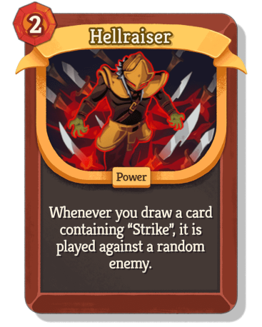
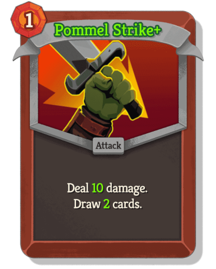
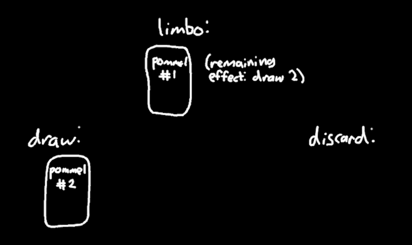
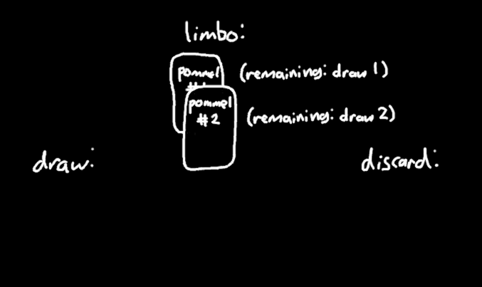
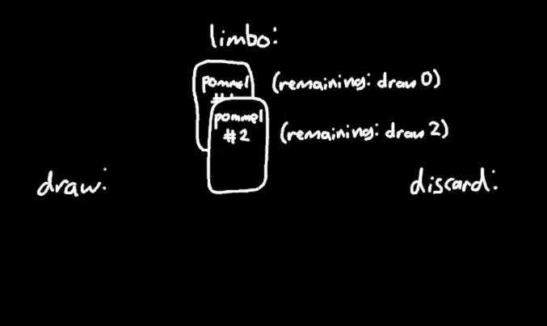
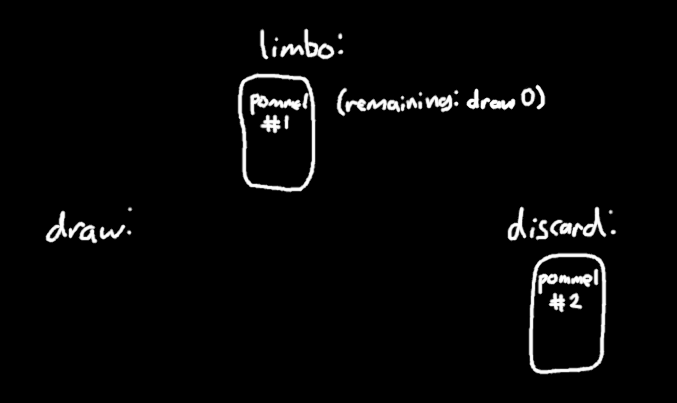
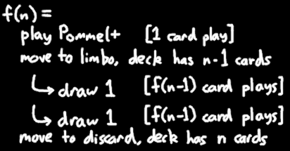

The Hellraiser "infinite" in Slay the Spire 2
2026-03-09Slay the Spire 2 was released 4 days ago! In my opinion it is a very fun game. This post is about a very unintuitive and mathematically interesting interaction between two Ironclad cards.


Imagine you have Hellraiser in play, your entire deck is 3 copies of Pommel Strike+, and you end your turn. On the next turn, you might expect that they keep playing forever until the enemy dies.
But there are some enemies that can prevent this, like the one that decreases your attack damage every time you play a card (so attacks eventually do nothing). What happens then? Do they play infinitely many times, softlocking your game?
No, it turns out that the loop stops after playing exactly 35 cards. If you have 4 copies of Pommel Strike+ instead of 3, it instead stops after exactly 75 cards.
What???
There is actually a real reason for these numbers to be what they are, and figuring it out is maybe an interesting "puzzle" (albeit one that requires understanding subtle details about card play mechanics). If you want to try solving it yourself, stop reading now, since I will spoil the answer below this clip.
the numbers
When I first heard about this confusing behavior where people's "infinites" were randomly fizzling, I collected some data by using the debug console to set up this scenario with various numbers of Pommel Strike+.
| pommels | cards played |
|---|---|
| 2 | 15 |
| 3 | 35 |
| 4 | 75 |
| 5 | 155 |
| 6 | 315 |
The last row was mostly a sanity check to verify that the apparent pattern still holds: to go from one row to the next, double it and add 5.
Why 5? Well, the number 5 happens to be the number of cards you draw at the start of your turn. So I tried giving myself a status effect that decreases your start of turn draw by 4, and discovered this indeed divides all the numbers by 5.
Okay, that explains some of it -- each start-of-turn draw accounts for the same number of card plays. But why is this number not infinite, and instead some function of the number of Pommel Strike+ in the deck?
card play mechanics
If your entire deck is a single Pommel Strike+ and you play it, you don't draw it back. This is because of a detail in how cards are played.
When you play a card, it moves to an abstract "currently-being-played" zone, and then it resolves all of the effects on the card, and then it moves to your discard pile. So the "draw 2" effect occurs while the Pommel Strike+ is still trapped in the "currently-being-played" zone, and therefore sees that there are no cards to draw. (From now on, I will refer to the "currently-being-played" zone as "limbo", since it's a bit of a mouthful.)
So what if you have two copies of Pommel Strike+? Let's say you have Hellraiser in play and you draw one of them. It moves to limbo, and then begins to resolve its "draw 2" effect.

The first step of drawing 2 is to draw 1, which happens to be the second Pommel Strike+. Now this one also moves to limbo, and begins to resolve its own "draw 2" effect.

But both cards in your deck are now in limbo, and there is nothing to draw! So nothing happens, and the second Pommel Strike+ gets discarded.
The first Pommel Strike+ is not yet done resolving -- it has only drawn 1 so far, and still has 1 more to draw. So the same thing happens again: the second Pommel Strike+ plays once, and is then discarded.


Now the first Pommel Strike+ is done with its effect, and is also discarded.
When all is said and done, exactly 3 cards have been played. The number in the table is 15, which agrees with this; since you draw 5 at the start of your turn, this entire process happens 5 times, and 3×5 = 15.
Okay, so that works, but it was a bit of a pain to work out by hand. It's time for some math.
recurrence relations
The fundamental question we want to answer is: If your deck is n copies of Pommel Strike+, how many cards are played when you draw one?
Let's call this function f: if you have n copies of Pommel Strike+, then drawing one of them results in f(n) card plays. We've already worked out that f(1) = 1 and f(2) = 3.
How do we compute f(n) without a specific value for n? Well, imagine you draw a Pommel Strike+. It immediately moves to limbo, and then it stays there forever until its entire chain of effects is done resolving. So for this entire duration, your deck effectively contains n-1 copies of Pommel Strike+.
Now we could go through the whole process of figuring out what happens as a result of the draw effect that is about to occur. But as I have just said, this is the exact same result as drawing a Pommel Strike+ from a deck of n-1 copies of Pommel Strike+, which is just f(n-1) card plays! Since the effect is draw 2, this happens twice, and adding the card play from the original Pommel Strike+ itself, we get f(n) = 2f(n-1) + 1.

We have now expressed f in terms of itself, but how do we compute an actual numerical value for a particular n? This is a recurrence relation, which I will not attempt to explain the full theory of here, but the solution in this case is f(n) = 2^n - 1. (You can check that this works: f(n) = 2f(n-1) + 1 = 2(2^(n-1) - 1) + 1 = 2^n - 2 + 1 = 2^n - 1.)
Finally, this gives a closed form for the numbers in the original table! Each of the 5 start-of-turn draws results in f(n) card plays, and so the total number of cards played is 5 × (2^n - 1).
conclusion
This was a surprisingly deep interaction between two seemingly very straightforward cards! Admittedly, most of the complexity comes from the somewhat unintuitive card play mechanics (thanks to @redstonerodent for figuring out where this 2^n was coming from!), but I still think it's very fun that these cards that absolutely do not say the number 315 on them can somehow produce the number 315 in actual gameplay (a claim I heard before investigating this was that 6 copies of Pommel Strike+ is actually infinite, which is understandable to believe).
Anyway, in case you find yourself with 50 copies of Pommel Strike+ against that one enemy who can only take 20 damage per turn and want to know when you get to play the game again, rest assured that you only need to wait for 5,629,499,534,213,115 card plays!
comments
Ryn 2026-03-13 19:11
It should work as infinite if you start the loop with pillage, having only 3 cards in the deck
Mia 2026-03-14 17:31
This is really cool, thanks for working this out! There's a common misconception about a "hard-coded limit" on Hellraiser floating around, but this explanation is so beautiful to wrap your head around. Funnily enough, if you have Unceasing Top, no math will save you from a potential soft-lock
PommelStrikeMan 2026-03-14 23:01
Dis tru
priw8 2026-03-15 19:27
I originally thought that the 15 limit was a deliberate choice hardcoded into the card itself to prevent softlocks. Very interesting how it's actually a side effect of how the game functions internally
neow 2026-03-16 20:57
as someone taking discrete math, this was a terrifying reminder that math is real. thank you
Selomelo 2026-03-17 12:16
Thank you for this explanation I was trying to figure the math out myself too. I thought how a card was resolving would be like magic the gathering but this interaction seems more fair. I love how games causes these kinds of mind puzzles intentional or not.
Anon 2026-03-20 21:22
Wow thank you for this - exactly the answer I was looking for!
StarStuff_29 2026-03-21 13:26
Wow, thanks for the awesome write up! Appreciate the hard work you did.
Augurer 2026-04-01 09:06
I think “stack” would be a better term than “limbo.” I think it operates similar to MtG’s stack.
tckmn 2026-05-01 13:18
yeah, they're basically the same i think, but as a non-magic-player who talks to a whole lot of magic players, my general impression is that the word "stack" scares people and i wanted to make the post minimally scary :p
and also since i have never played magic, i don't know if it actually works the same way, so i wanted to avoid making any equivalencies in case there was some subtle difference i didn't know about
HardToSee 2026-04-17 13:43
Thanks for the detailed explanation. Did not think there are so many interesting intricacy to behind the scene mechanic.